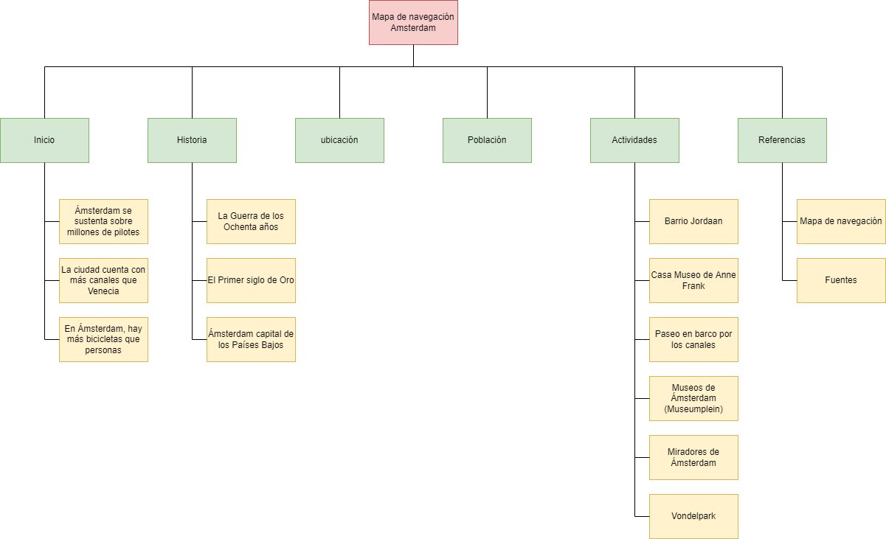

Mapa de navegación

Referencias
- https://co.hoteles.com/go/paises-bajos/cosas-para-conocer-amsterdam
- https://www.disfrutaamsterdam.com/historia
- https://amsterdamyeah.com/es/donde-se-encuentra-amsterdam-holanda-paises-bajos/
- https://buendiatours.com/es/guias/amsterdam/cifras
- https://www.mochileandoporelmundo.com/wp-content/uploads/2016/06/que-ver-hacer-amsterdam-Vondelpark.jpg
- https://www.mochileandoporelmundo.com/wp-content/uploads/2016/06/que-ver-hacer-amsterdam-Public-Library.jpg
- https://www.mochileandoporelmundo.com/wp-content/uploads/2016/06/que-ver-hacer-amsterdam-Rijksmuseum.jpg
- https://www.mochileandoporelmundo.com/wp-content/uploads/2016/06/que-ver-hacer-amsterdam-canales-iglesia-Westerkerk.jpg
- https://www.mochileandoporelmundo.com/wp-content/uploads/2016/06/que-ver-hacer-amsterdam-calle.jpg
- https://www.mochileandoporelmundo.com/30-cosas-que-ver-y-hacer-amsterdam/
- https://a.cdn-hotels.com/gdcs/production177/d368/e0ba878e-5a8f-4768-becf-1edacf49c3b9.jpg?impolicy=fcrop&w=1600&h=1066&q=medium
- https://a.cdn-hotels.com/gdcs/production112/d1899/d77bcff2-a859-4785-bdb1-3b15a0887607.jpg?impolicy=fcrop&w=1600&h=1066&q=medium
- https://a.cdn-hotels.com/gdcs/production166/d427/b65225f3-0135-4c38-bee6-ddcb1e92f7eb.jpg?impolicy=fcrop&w=1600&h=1066&q=medium
- https://a.cdn-hotels.com/gdcs/production138/d659/a7d27752-c828-4749-a91a-df14bedc63c7.jpg?impolicy=fcrop&w=1600&h=1066&q=medium
- https://www.google.com/url?sa=i&url=https%3A%2F%2Fwww.elconfidencial.com%2Fmundo%2F2017-10-17%2Fen-amsterdam-no-caben-mas-turistas_1461632%2F&psig=AOvVaw3FomW1H-xnDtCjtf-ybW1R&ust=1649565962599000&source=images&cd=vfe&ved=0CAoQjRxqFwoTCPiZyZ2WhvcCFQAAAAAdAAAAABAD
- https://es.wikipedia.org/wiki/%C3%81msterdam
- https://datosmacro.expansion.com/paises/paises-bajos
{kind=link}
{kind=link}
{kind=link}
{kind=link}
{kind=link}
{kind=link}
{kind=link}
{kind=link}
{kind=link}